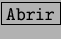

El cuadro se abre en la misma carpeta en que se trabajó la última vez. En la zona grande de trabajo aparecen las carpetas de esa carpeta y los documentos encontrados. Haciendo doble pulsación sobre una carpeta, se pasa a examinar su contenido. El cuarto botón de la barra de herramientas permite volver a la carpeta padre de la que se está viendo. El segundo y tercer botones sirven para elegir el modo de presentar la lista de documentos encontrados. Se recomienda el modo Detalles, ya que así se puede navegar más fácilmente por el árbol de directorios, pulsando en los «+» y «-».
El cuadro de texto Nombre del archivo puede usarse para escribir directamente el nombre (o el nombre completo) del documento que se desea abrir. También se puede escribir un nombre usando caracteres comodín; al pulsar el botón Abrir, aparecerán aquellos nombres de documento que encajen con el patrón dado en los comodines. La lista desplegable Tipo de archivo tiene exactamente esta utilidad, pero con una serie de nombres de fichero ya preestablecida.
Por fin, cuando se decida el documento que hay que abrir, se pulsa sobre él y luego sobre el botón .